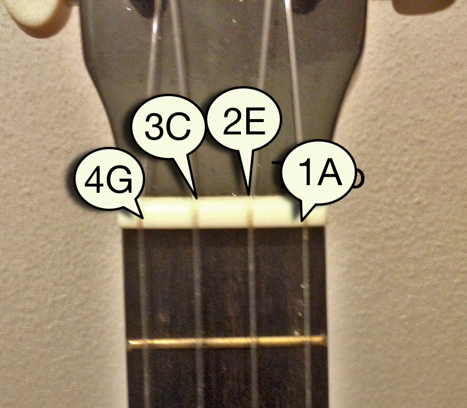

Tune your ukulele!!
I am sorry but your browser not
support some needed feature here.
What about use firefox ?

BTW: I see this works on chrome and firefox browsers
Freq:
Note:
Precision

Made with ♥ in HTML5